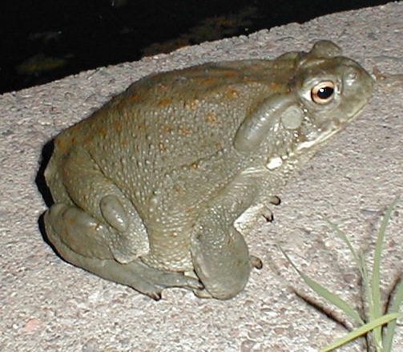

The Sonoran
Desert Toad
The Sonoran
Desert Toad
The Sonoran
Desert Toad
Bufo alvarius
Wall Street Journal - PAGE A1
March 7, 1994
Toad-Smoking Gains On Toad-Licking Among Drug Users --- Toxic, Hallucinogenic Venom, Squeezed, Dried and
Puffed, Has Others Turned Off
By Bill Richards
SAN FRANCISCO -- For the record, Mojo Nixon says neither he nor any member of his rock band, Mojo Nixon and the
Toad Lickers, has ever actually licked a toad.
Still, with a name like that, Mr. Nixon's band can hardly help but attract attention from what authorities say
is a small but growing segment of the drug culture that has taken up the bizarre practice of ingesting venom
squeezed from live toads. "People come up to us all the time and ask if we get high licking toads," says Mr.
Nixon, who calls the very idea "insane."
Mojo knows. He read something about toad-licking in the underground press about four years ago, and his band,
the Burger Eaters, became the Toad Lickers. Although tales of getting a buzz from lapping toad squeezings have
circulated through underground lore since the 1960s, drug authorities on both sides of the law agree on one
thing: Toad-licking is not just weird but dangerous.
Toad venom contains dozens of chemically active compounds, including enough poison to kill dogs that sometimes
catch the warty little hoppers and try to eat them. "I would think you could poison yourself pretty badly before
you got high licking toads," says Andrew T. Weil, an ethnopharmacologist at the University of Arizona's College
of Medicine in Tucson.
Thus, after a spurt of experimentation, toad-licking tapered off.
Toad-smoking, on the other hand, seems to be less risky and is on the rise, says Cecil Schwalbe, a research
ecologist for the Interior Department. Dr. Schwalbe says the heat from smoking venom appears to break down the
toxins while retaining the psychedelics. "The people who believe in better living through chemistry found out
you could get the same hallucinogenic reaction from smoking toads as from licking them," he says.
Dr. Weil, a physician and drug-culture researcher, says that when he and a fellow researcher smoked dried venom
from a Colorado River toad, it produced "a sense of wonder and well-being."
Dr. Weil's report, published two years ago in an obscure anthropological journal, Ancient Mesoamerica, apparently sent a smoke signal through the drug underground.

Arizona wildlife authorities recently raided the home of an unlicensed reptile-dealer near Tucson and discovered
dozens of football-sized Colorado River toads sitting placidly in the man's living room. (State law does allow
possession of up to 10 toads if you have a fishing license.) John Romero, law-enforcement program manager for
the Arizona Department of Game and Fish, says his agents puzzled awhile over why anyone would have toads around
the house. "Then the light came on," Mr. Romero says.
On the Southern California drug market these days, drug agents say a healthy toad can fetch up to $8. One
alleged dealer was arrested for illegal trading in wildlife last fall after he ran an ad in the University of
Arizona student newspaper seeking a toad supply.
"Cane Toads," a 1989 documentary film that describes smoking toad venom in Australia, has become a cult-video
favorite. Toad-licking also came up recently on the television series "LA Law" (which mistakenly showed a
bullfrog instead of a toad) and in an MTV "Beavis and Butthead" cartoon. "The show reflects what's going on in
the youth culture," explains a "Beavis and Butt-head" spokeswoman.
Still, the whole toad thing is so bizarre that even critics are hard pressed to maintain a straight face. South
Carolina lawmakers giggled when a bill was introduced four years ago that would have made the state the first to
outlaw toad-licking. Rep. Patrick B. Harris, finding the practice "repulsive but amusing," proposed sentencing
violators to 60 hours of public service in a local zoo.
Toads made the news again last month when California drug agents arrested Robert
Shepard, a 41-year-old Boy Scout troop leader in Angels Camp, Calif., about 100 miles east of San
Francisco. Mr. Shepard was charged with several drug offenses, including possession of
bufotenine, a chemical constituent of toad venom and a recognized hallucinogen. The
agents also impounded Mr. Shepard's four Colorado River toads -- Brian, Peter, Hans and Franz.
Gregory Elam, the officer who made the arrest, says Mr. Shepard was so contrite he helped drug agents make a
training video showing how venom is squeezed from kidney-shaped parotoid glands on the back of a live toad, then
dried and smoked. "It was pretty disgusting," says Mr. Elam, who has a big photograph of a toad on his office
wall. "This is not something you would brag about to your mama."
Mr. Shepard won't talk to a reporter about toads or anything else. But James Webster, his attorney, says he
himself had never heard of toad-smoking. "I've heard of a princess kissing a toad," says Mr. Webster,
misremembering the story of the frog prince. "I guess these days she'd be busted, too."
Narcotics agents say Mr. Shepard may be the first person ever arrested on toad-smoking charges.
Bufotenine, as a hallucinogen, has been on federal and state dangerous-drug lists for
years, and its possession is illegal.
In his Ancient Mesoamerica article, Dr. Weil reported that toad skins and
artifacts depicting toads have turned up at Indian ceremonial sites in Mexico and Central America dating back
more than a thousand years. The researcher and others speculate that Mayans, Aztecs and other ancients may have
used toad venom as an intoxicant in their rites.
Dr. Weil and his co-author, Wade Davis, theorize that the Colorado River toad has become the smokers' choice not
because of
bufotenine, but because it contains large amounts of the chemical compound,
5-MeO-DMT, a powerful psychoactive drug.
Experts describe the toad as a shy reptile
found mostly in the Sonoran desert in northern Mexico and in the southern parts of Arizona and
California. The toads live underground most of the year, emerging only during the brief rainy season in
midsummer.
The Colorado River toad, Dr. Weil says, is a virtual psychedelic
factory, whose venom produces a 20-minute high that is so intense it can be frightening to the
uninitiated. "I've seen people take
one deep puff and fall over backward as they exhale," he says.
Toad puffers, Dr. Weil says, usually are unresponsive for five minutes or more, making little noises until they
open their eyes. Mr. Davis, a Washington anthropologist, calls the effect "a magical slap in the face."
That may be pleasing to toad-smokers, but it could mean problems for toads in the wild. Dr. Weil says he has
already received telephone calls from Californians eager to visit southern Arizona, where the critters are
plentiful, to catch Colorado River toads. "This looks like it could be a trend, and the toad is the one that
will suffer," says Mr. Romero, the Arizona Game and Fish official worried about depleting the toad
population.
The toad's protector, say officials, will probably be environmental laws, not drug laws. California, for
example, began implementing a law last week that makes it a misdemeanor to possess any of the shrinking
population of Colorado River toads in the state.
"Eventually," says Mr. Elam, the Angels Camp drug agent, "you'll probably see a much stiffer penalty for
possession of a toad than for a controlled substance. The environmentalists have more clout than the cops."
ISSN:00999660
Copyright Dow Jones & Company Inc Mar 7, 1994
Corrections & Amplifications
THE COLORADO RIVER TOAD is an amphibian. A page-one article in Monday's edition incorrectly called the toad a
reptile. (WSJ March 10, 1994)